设计简介：设计立足于对城市空间和人群使用需求之上，从城市性、社会性、平民视角出发，采用消解巨构、散布触媒的方法设计主要功能体块。借助艺术内街、广场等公共空间激发场地活力。通过一条三楼到一楼的坡道，创造丰富的室内观展空间和中庭，实现流线观览的丰富视觉体验。
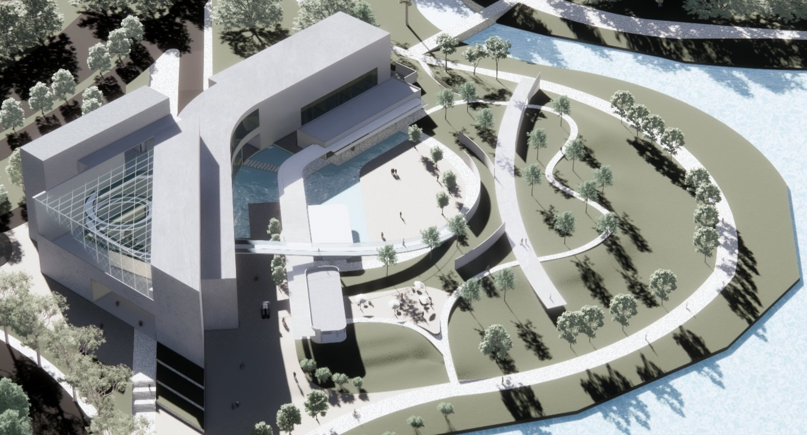
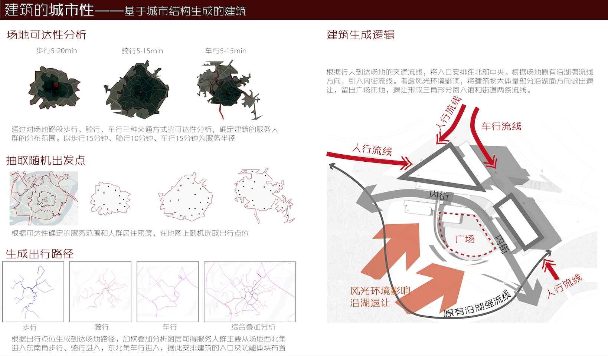
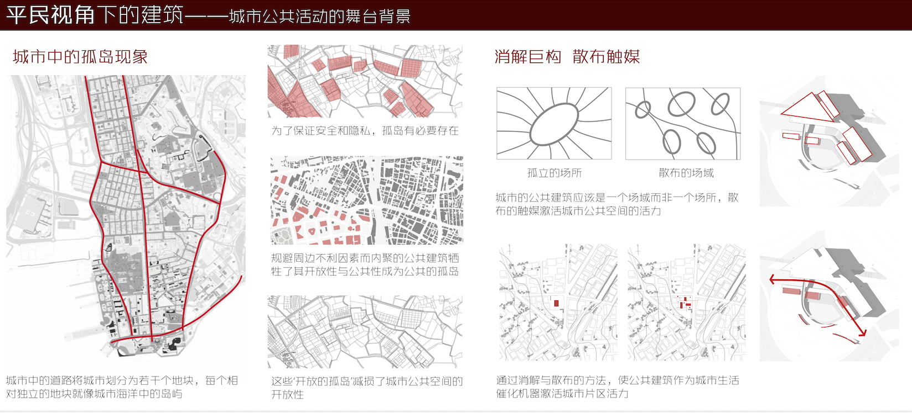
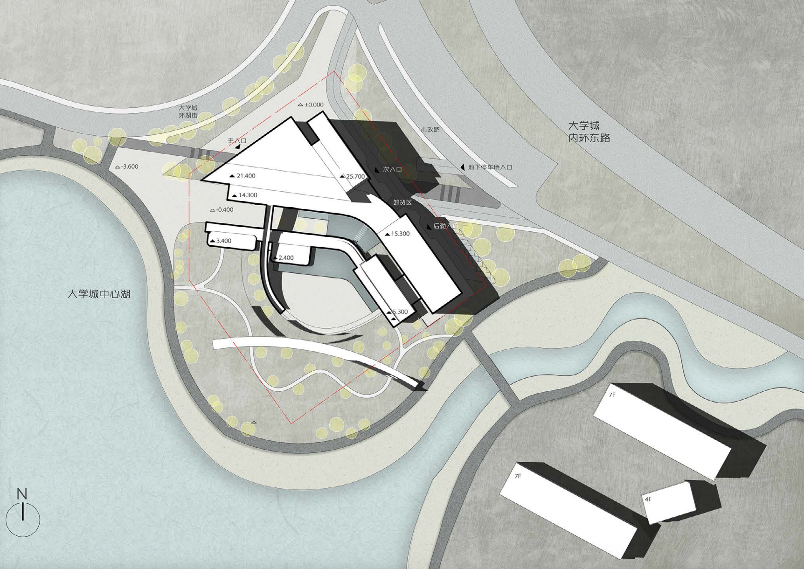
总平面图
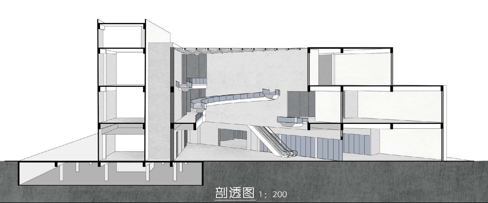
三角空间结合坡道设计打造特色的中庭
顶层看中庭视角
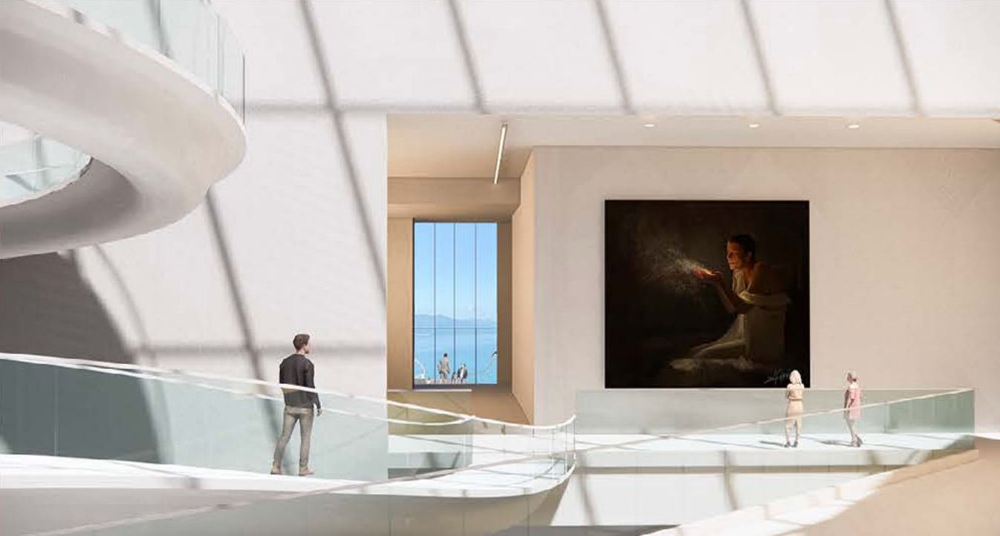
中庭坡道视角
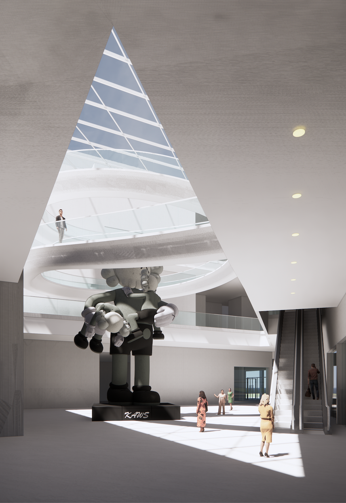
一层看中庭视角

与水岸关系
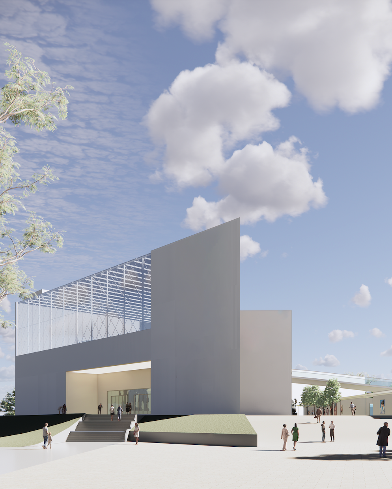
建筑和室外画廊
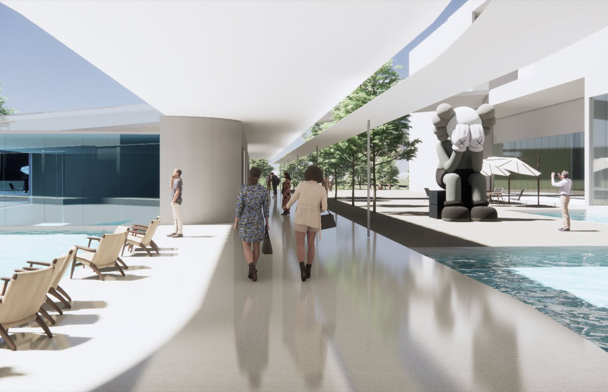
室外画廊
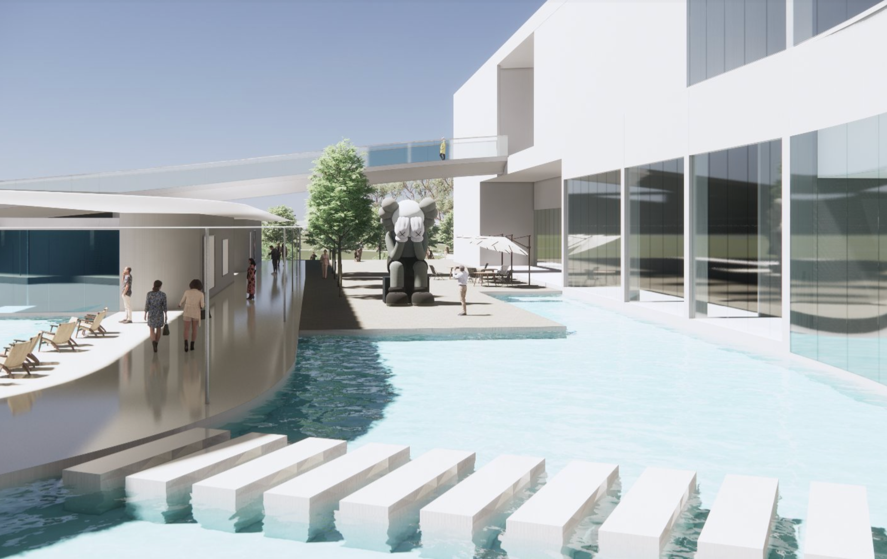
室外画廊
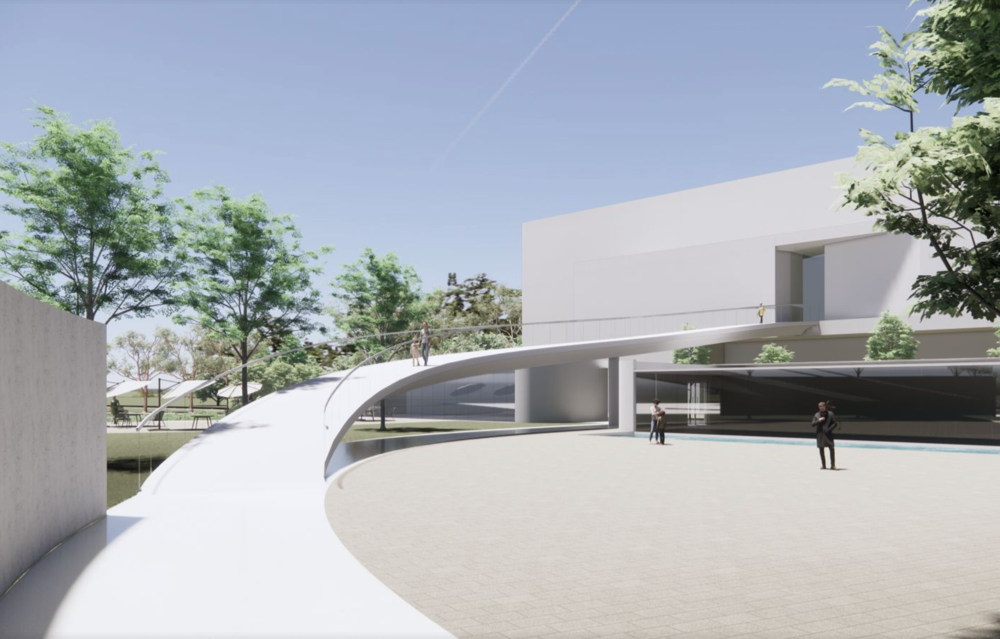
坡道从博物馆内延伸到广场
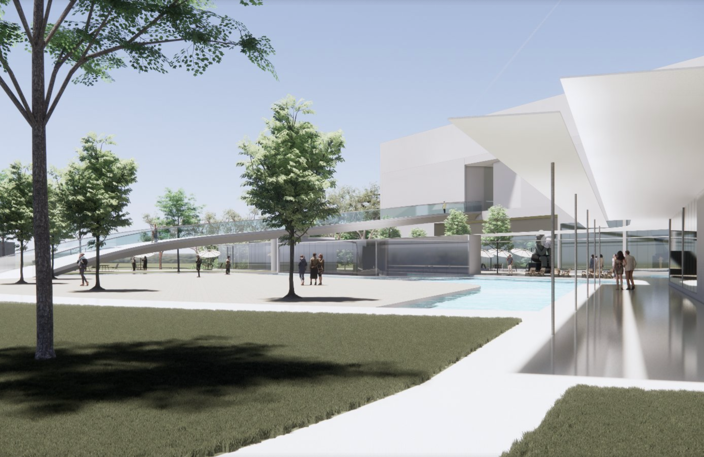
室外画廊和广场
Design Concept: Grounded in the spatial requirements of the city and the needs of its inhabitants, the design adopts an urban, social, and populist perspective. It deconstructs monumental structures and disperses catalytic elements to shape primary functional volumes. Public spaces such as the art-themed inner street and plaza invigorate the site. A ramp connecting the third floor to the ground level creates diverse indoor exhibition spaces and atriums, delivering a rich visual experience through a fluid visitor flow.
Plan
The triangular space combines with ramp design to create a distinctive atrium
Top-floor view of the atrium
Atrium Ramp Perspective
First-floor view of the atrium
Relationship with the Waterfront
Entrance of the Outdoor Gallery
Outdoor Gallery
Outdoor Gallery
The ramp extends from the museum to the plaza
Outdoor Gallery and Plaza